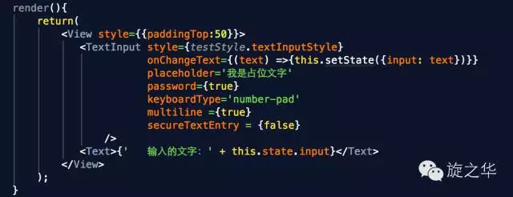
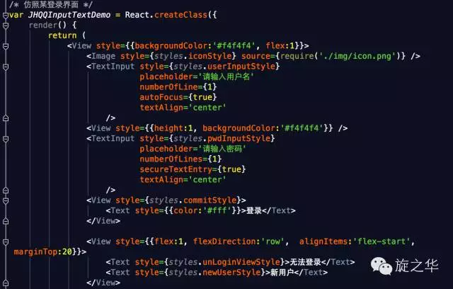
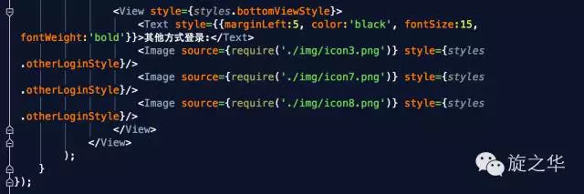
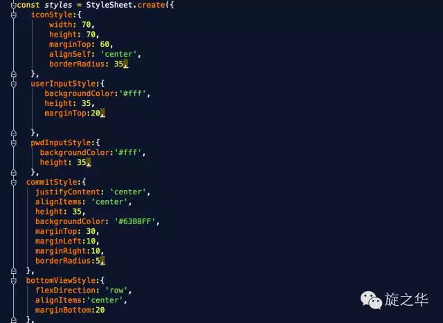
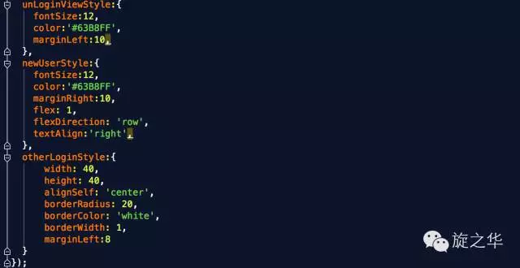
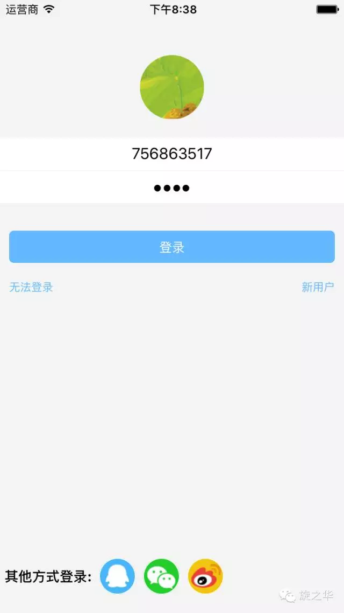

前言
文本输入框，相当于OC中的UITextField，在用法和属性方面，两者都有很大的借鉴之处：通过键盘将文本输入到应用程序的一个基本的组件；
TextInput的常见属性
因为TextInput是继承自UIView，所以View的属性TextInput也能够使用，一些样式类的属性在学习的时候可以参照View的相关属性。
value 字符串型
文本输入的默认值
onChangeText 函数
监听用户输入的值：

keyboardType 键盘类型
决定打开哪种键盘，例如，数字键盘。
1 | enum('default', "ascii-capable", 'numbers-and-punctuation', 'url', |
multiline 布尔型
如果值为真，文本输入可以输入多行。默认值为假。
password 布尔型
如果值为真，文本输入框就成为一个密码区域。默认值为假。
placeholder 字符串型
在文本输入之前字符串将被呈现出来，通常被称为占位文字
placeholderTextColor 字符串型
占位符字符串的文本颜色
autoCapitalize enum(‘none’, ‘sentences’, ‘words’, ‘characters’)
可以通知文本输入自动利用某些字符。
- characters：所有字符，
- words：每一个单词的首字母
- sentences：每个句子的首字母（默认情况下）
- none：不会自动使用任何东西
autoCorrect 布尔型
如果值为假，禁用自动校正。默认值为真。
autoFocus 布尔型
如果值为真，聚焦 componentDidMount 上的文本。默认值为假。
bufferDelay 数值型
这个会帮助避免由于 JS 和原生文本输入之间的竞态条件而丢失字符。默认值应该是没问题的，但是如果你每一个按键都操作的非常缓慢，那么你可能想尝试增加这个。
clearButtonMode enum(‘never’, ‘while-editing’, ‘unless-editing’, ‘always’)
清除按钮出现在文本视图右侧的时机
controlled 布尔型
如果你真想要它表现成一个控制组件，你可以将它的值设置为真，但是按下按键，并且/或者缓慢打字，你可能会看到它闪烁，这取决于你如何处理 onChange 事件。
editable 布尔型
如果值为假，文本是不可编辑的。默认值为真。
enablesReturnKeyAutomatically 布尔型
如果值为真，当没有文本的时候键盘是不能返回键值的，当有文本的时候会自动返回。默认值为假。
onBlur 函数
当文本输入是模糊的，调用回调函数
onChange 函数
当文本输入的文本发生变化时，调用回调函数
onEndEditing 函数
onFocus 函数
当输入的文本是聚焦状态时，调用回调函数
returnKeyType enum(‘default’, ‘go’, ‘google’, ‘join’, ‘next’, ‘route’, ‘search’, ‘send’, ‘yahoo’, ‘done’, ‘emergency-call’)
决定返回键的样式
secureTextEntry 布尔型
如果值为真，文本输入框就会使输入的文本变得模糊，以便于像密码这样敏感的文本保持安全。默认值为假。
Demo综合演练 — 简单的登录界面
主要代码：




运行效果：

(本文转载自旋之华微信公众号)